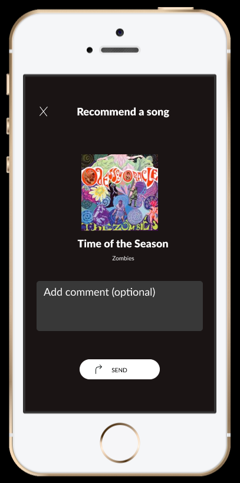

Spotify Social Feature
NYU UX Design Course
Fall 2020

Share music with friends without leaving the Spotify app!
Overview
I was tasked with implementing a new feature onto an already-existing application. I chose to create a Social page to the Spotify mobile app, where users can share songs with each other and keep track of all the music that’s been shared between them.
Research
My process was based on research I performed, asking mobile music app-users their opinions on how they currently share music, how they would like to share music, and what they think of the Spotify user experience. I also prepared for this project by extensively browsing the Spotify app, making sure I understand the way the app works, from screen movement to the actions allowed by all the menu options, so I could correctly recreate the app.
Implementation
I used Figma to recreate the current Spotify visual design and to add a few ways to share a song with another user. This includes creating 25 different sample iPhone screens showing different parts of the app and my newly-designed music-sharing process. The Social page has a list of the user’s friends, and each friend’s page has a Shared Music section, where the user can find a list of all the music they have shared with that friend, and where they can either recommend a song to that friend or request a song from that friend. The user can also recommend a song from the song menu which the user can access from anywhere on the app.